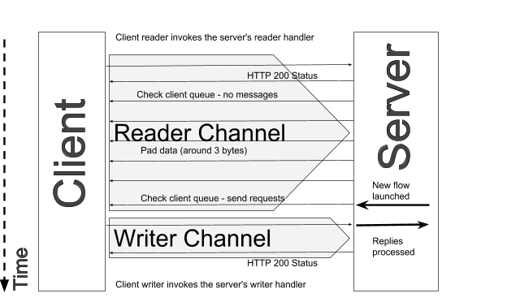

Velociraptor's client communications
How does the GRR client communicate?
The GRR client protocol is depicted below.

Due to network realities such as NAT, firewalls etc, it is not possible to directly connect to the client, so GRR relies on the client connecting to the server in order to communicate with it.
The GRR client makes periodic POST requests to the server to both send replies and receive new instructions. Since POST requests are very short lived (most client polls carry no data) the client has to repeat the polls periodically.
There are two parameters which determine how the GRR client behaves - poll_max and poll_min. When there is some requests sent to the client, the client will reduce its poll wait time to poll_min (default 0.2 seconds). When nothing happens, the client will increase its poll time gradually up to poll_max (default 10 minutes).
Having long poll times means that any new flows launched on an idle client must wait for up to 10 minutes before the client polls again in order to send the new requests to the client. Unfortunately reducing the poll_max setting actually increases server load, as the server needs to hit the database more often to serve each poll. This scheme essentially poses a trade off - for a responsive client, we must have a low poll_max (i.e. more frequent polls) but this increases the load on the frontend so it can not be too low.
When GRR is normally deployed it produces 2 types of clients on the web interface: the debug client has max_poll set to 5 seconds making testing easier because it is more responsive, but the non-debug version has max_poll set to 10 minutes. For example at Velocidex, one of our clients had once accidentally deployed the debug version and the server was slammed with 5 second polls from several thousand clients! This rendered the server useless, returning HTTP 500 status codes for most client polls. The only way to recover was to push new config to the clients and restart their GRR service in order to lower the poll frequency and recover control over the deployment.
Catastrophic failure under load
The other problem with GRR's client communication protocol is that it tends to exhibit catastrophic failure under load. When the client makes a HTTP POST operation, the server goes through the following steps in order:
- Unpack and decrypts any replies the client sends in its POST message
- Queue these replies on a worker queue
- Read the client's job queue for any outstanding requests to the client.
- Pack and encrypt these requests to the client.
- Write them as the body response of the HTTP POST with hopefully a 200 HTTP status.
In previous posts we have seen that GRR's overuse of queuing leads to extreme loads on the database, so under load (e.g. when a large hunt is taking place), the above process may take some time until the server can obtain a lock on the database row, write and read the messages, and compose its response.
What tends to happen under load, is that the client will time the request out if the server takes too long, or the server itself may timeout the request with a HTTP 500 code. The client, thinking it has not got through will try to POST the same data again (this time it will wait longer though).
This essentially makes things worse, because the replies are probably already mostly queued so the next retry will re-queue the same requests (these will be discarded by the worker anyway but they are still queued), increasing database pressure and server load. This manifests in a critical meltdown of the frontends who pretty soon serve mostly 500 errors (making things worse again).
This is the reason why resource provision is so important with GRR, if the frontends are just too slow to be able to keep up, the connections will start to timeout, and load increases (rather than decreases) causing a catastrophic failure.
How can we fix this?
The main problem with a polling scheme is that the user experience is terrible - even if we reduce the poll wait times to few seconds, users will have to wait to view the results of their actions - leading to an overall experience of a slow and sluggish system. For a resposive user interface we need to have client round trips of a second or less and having poll_max set this low will just use up too many resources. This is particularly noticeable in the VFS browser since it takes so long to navigate to the desired directory and download files interactively.
Other endpoint monitoring systems use distributed pub/sub systems like RabbitMQ or Firebase realtime database to inform the clients of new requests. In those systems, the client makes a TCP connection to an endpoint and holds the connection open for long periods of time, the server can then immediately push new requests to the client as soon as they are published. This seems like the way to go but we did not want to introduce another dependency on Velociraptor (we really like it being a self contained - working out of the box binary).
In particular we also wanted to solve the catastrophic failure we saw with GRR clients under load (described above). This means that we need to make sure that the clients are not sending data faster than the server can process it. We definitely want to avoid the POST timing out with a 500 error and the client retrying the same POST since this is the main cause for the catastrophic failures we experienced with GRR.
We can do this by keeping the client's connection open for as long as we need, but in order to not time it out, we send the HTTP status code immediately, then process the POST data, while sending the client keepalive data periodically using HTTP chunked transfer encoding.
To the client, and any proxies in the way, it simply looks like the POST request was received immediately, and the response body is downloaded slowly (there is always some pad data flowing so none of the TCP or HTTP timers are triggered since the connection is always active). This is illustrated in the diagram below.

This scheme has the two main advantages:
- By returning a 200 status to the client before we begin processing, the client knows we received the data. They are then able to de-queue these messages and will not transmit them again.
- By keeping the client connected while the server is processing the request we avoid any additional data from being sent to the server while it is busy. The client will be blocked on the HTTP connection and will actually pause its running VQL query while the server is processing the current responses. This mechanism actually throttles the clients to allow the server to keep up.
Making the client more responsive
We really wanted to make clients more responsive. We were frankly sick of having to wait up to 10 minutes to access a client that we knew was online in our IR work. To make the client more responsive we wanted to use the same technique to keep the client connection open for long periods of time, and then send instructions to the client as soon as the user issues a new flow.
In the GRR scheme new requests are sent on the same connections as client replies are received. This won't work if the client connection is held open for long periods of time because while the client is blocked reading new responses from the server, it can not send any replies (the POST header was already sent).
To fix this we switched to two separate POST connections on two server handlers, a reader handler and a writer handler. The writer handler only receives messages from the client to the server (i.e. replies to client requests), while the reader handler blocks the client for prolonged time and sends client requests as soon as new flows are launched.
This scheme allows a full duplex, responsive communication protocol, with no polling overheads. This can be seen in the diagram below.
The client establishes the reader channel by sending a HTTP POST request to the reader handler. The server checks for any messages for the client, and sees that there are none pending. It will then keep the client's connection open as before, trickle sending pad data (using HTTP chunked transfer encoding) to keep the connection open for as long as possible.
When the user launches a new flow, the server can immediately forward the client's requests on the open channel, completing the POST operation. The client will then process the requests and send the responses with a separate HTTP POST to the writer channel. In the meantime the reader channel will re-POST to the reader handler and become blocked and ready for the next request.
This scheme has the following advantages:
- The user's flow is executed instantly by the client. This makes for example, the VFS browser instant - as soon as the user clicks the "refresh directory listing" button, the directory is refreshed. As soon as the user wants to view a file, the file is downloaded etc.
- There is hardly any polling activity. The clients open a reader connection once and hold it for many minutes. The server need only check the queue at the beginning of the connection and then only if it knows there is a new flow launched for this client. This means server load is really low.
However, the scheme also has some disadvantages:
- TCP connections are held for long periods of time tying up server resources. In particular the open sockets count towards the process's open file descriptor limit. It is typically necessary to increase this limit (by default it is 1024 which is very low).
- Deploying over multiple servers is a bit more complex because a client may be blocked on one server and the flow is launched on another server. Velociraptor now has a notification API to allow inter server RPCs to propagate notifications between servers.
We believe that these limitations can be easily managed. They are no different from typical limitations of large scale pub/sub systems (they too need to hold many TCP connections open). In our testing we have not seen a problem scaling to many thousands of connected clients with very low resource use.
Velociraptor now also has a pool client that allows spinning up several thousand clients at the same time. This helps with testing a deployment to make sure it can handle the increased open file limit and test how large scale hunts can be handled.
Conclusions
The new responsive client communications protocol allows for near instantaneous access to clients. This actually reduces the overall load on the system because we do not need to perform frequent client polls just to check if a new flow is launched. User experience is much better as users can interact with clients immediately.